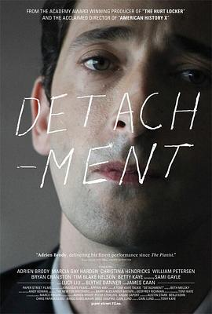

超脱 / Detachment
又名：人间师格(台)
作品信息
| 导演 | 托尼·凯耶 |
| 编剧 | 卡尔·隆德 |
| 主演 | 阿德里安·布罗迪 / 马西娅·盖伊·哈登 / 詹姆斯·肯恩 / 克里斯蒂娜·亨德里克斯 / 刘玉玲 / 布莱思·丹纳 / 蒂姆·布雷克·尼尔森 / 威廉·彼德森 / 布莱恩·克兰斯顿 / 萨米·盖尔 / 路易斯·佐里奇 / 小伊塞亚·维特洛克 / 大卫·豪森 / 约翰·塞纳迭姆博 / 西莉亚·奥 / 罗南·鲁宾斯坦 / 阿尔·卡尔德隆 / 布雷南·布朗 / 里根·利奥纳德 / 詹姆斯·霍西 / 乔什·帕斯 / 瑞内·菲利斯·史密斯 / 道格·伊·道格 / 帕特里夏·雷 / 萨曼萨·罗根 / 拉尔夫·罗德里格斯 |
| 类型 | 剧情 |
| 制片国家/地区 | 美国 |
| 语言 | 英语 |
| 上映日期 | 2011-04-25(翠贝卡电影节) / 2012-02-24(美国) |
| 片长 | 98分钟 |
| IMDb | tt1683526 |
说过什么
2024-08-26 19:44:38
广播 · 想看
最后一次看到是 2026-08-01T11:08:04+10:00 · 豆瓣原页